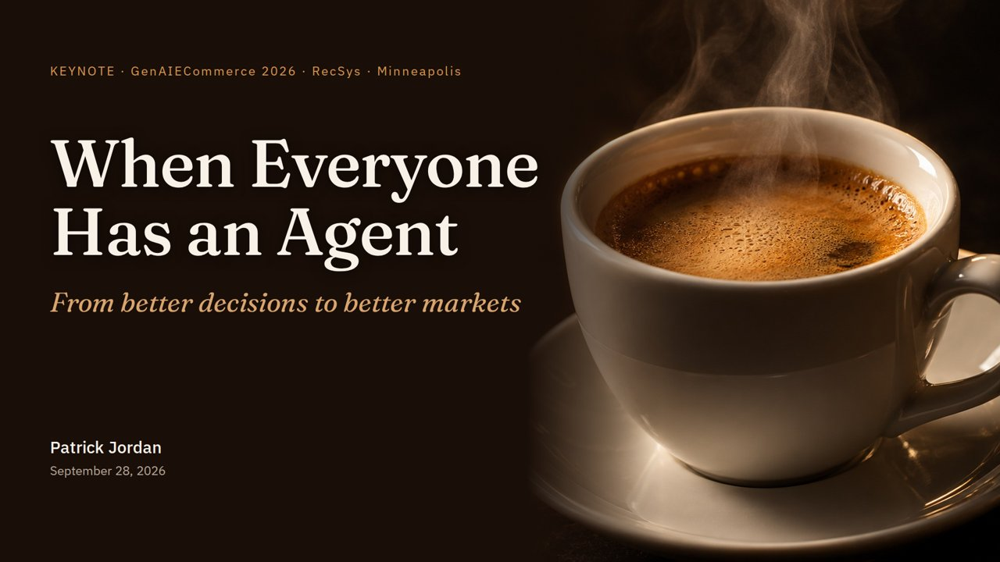

AI agents are rapidly becoming capable of searching, recommending, negotiating, and transacting on behalf of users and businesses. But something fundamental changes when these agents interact with other independently motivated agents: the problem shifts from making good decisions to making good decisions in a strategic environment.
This talk explores that transition through the lens of recommendation games. When a user agent solicits recommendations from multiple competing agents, each recommendation is no longer simply a prediction of what the user wants. It is also a strategic action, shaped by what other agents recommend and by the rules governing selection and reward.
More broadly, the talk considers a shift from decision theory to game theory and mechanism design for agentic commerce at scale. The central challenge is not simply to build smarter agents. It is to design and evaluate the environments in which they interact, so that useful behavior becomes strategically advantageous.
The opinions in this talk are my own and do not represent my employer. The espresso market is a stylized example.